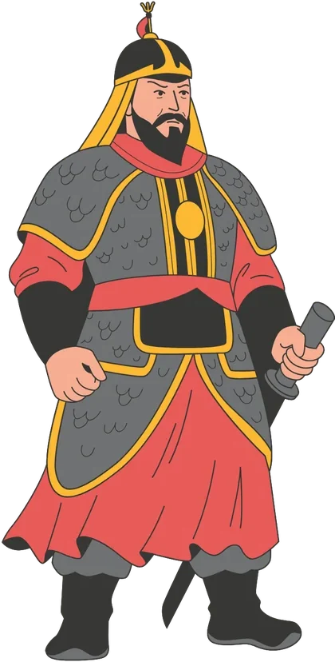
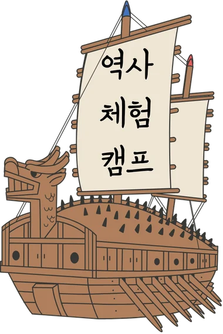
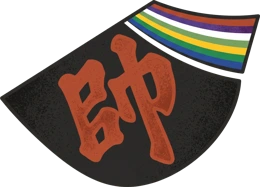

임진년 정월 16일 정축
동헌에 나가 를 보았다. 각 관청의 벼슬아치들과 아전들이 인사를 하러 왔다. 방답의 군대 배를 관리하는 군관과 아전들이 전투선을 수선하지 않았으므로 곤장을 쳤다.


다시(또) 역사 속 그 길(路)을 걷고 기록(錄)하다
별명 ___________ 모둠 ________
개인정보는 받지 않아요. 기록은 내 휴대폰에만 저장돼요.
의 일기장
일러스트: Canva
_ 출근 Road(路) 업무 Log(錄)
1593년 계사년, 이순신은 수군 본영을 여수에서 한산도로 옮기고 삼도수군통제사가 되었어요. 오늘 우리가 타는 배는 장군의 일터로 가는 출근 배예요.
동헌에 나가 를 보았다. 각 관청의 벼슬아치들과 아전들이 인사를 하러 왔다. 방답의 군대 배를 관리하는 군관과 아전들이 전투선을 수선하지 않았으므로 곤장을 쳤다.
동헌에서 공무를 보며 10순을 했다. 5순은 연달아 적중하고, 2순은 네 번, 3순은 세 번 적중했다.
렌즈 질문 통제사는 어떤 일을 했을까? 시간을 눌러 장군의 하루를 채워요.
왜장 와키자카가 섬에서 열흘 넘게 버티며 먹었다고 전해지는 음식, 장군의 일기에도 나와요.
알아 두기 ‘동’은 미역처럼 묶어서 파는 물건을 세던 옛 단위예요. 견내량에서 트릿대로 돌미역을 따는 전통 방식은 2020년 국가중요어업유산 제8호가 되었어요.
이 층루선 밑으로 곧바로 돌진하여 용의 입으로 현자철환을 치쏘고 천자·지자 대장군전을 쏘아 그 배를 무너뜨리자, 뒤에 있던 여러 전선들도 철환과 화살을 교대로 발사하였습니다.
장계: 장수가 임금께 올린 보고서
왜장이 에 맞아 떨어지자 여러 왜적들은 일시에 놀라 흩어졌다. 여러 장병들이 한꺼번에 모여들어 사격해 대니 화살을 맞아 쓰러지는 자 얼마인지 알 수 없었다. 남김없이 다 섬멸해 버렸다. 이윽고 왜적의 큰 배 20여 척이 부산으로부터 바다에 대열을 지어 들어오다가 우리 군사들을 바라보고는 도망쳐서 개도(통영시 산양읍 추도리)로 들어가 버렸다.
생각 고리 왜장을 맞힌 그 화살, 누가 쏘았을까?
렌즈 질문 지형이 불리한 곳에서 조선 수군은 어떻게 이겼을까?
중위장 권준이 돌입하여 왜장을 쏘아 맞추자 활시위 소리와 함께 고꾸라져 떨어지거늘, 사도첨사 김완과 군관인 흥양보인 진무성이 그 왜장의 머리를 베니 적도들이 겁내어 도망쳤습니다.
암행어사 유몽인의 장계 초안을 보았다. 임실현감 이몽상, 무장현감 이충길, 영암군수 김성헌, 낙안군수 신호는 파면하고, 순천부사는 탐관오리의 으뜸으로 논하였다. 담양·진원·나주·창평 등의 수령은 악행을 덮어 주고 칭찬하여 아뢰었다. 임금의 귀를 속임이 이 지경에 이르렀다. (후략)
같은 사람은? 기록 ① ____________ = 기록 ② ____________
중위장 ? 권준
권준의 벼슬은 무엇이었을까요?
역사 토론 왜 같은 인물을 다르게 기록했을까? 나는 권준을 어떻게 보나요?
당시는 전쟁 중이었어요. 이순신은 같은 날 일기 뒷부분에, 남쪽 지방의 종잡을 수 없는 말만 듣고 나라를 그르치는 간사한 말이 진회가 악무목을 모함한 짓과 다를 바 없다며 통탄했어요.
진회: 송나라의 간신 · 악무목: 진회의 모함으로 죽은 충신 악비
내가 생각하는 한산 대첩의 승리 전략은 이다!
한산섬 달 밝은 밤에 수루에 혼자 앉아
큰 칼 옆에 차고 깊은 시름 하는 적에
어디서 일성호가는 남의 애를 끊나니
일성호가: 한 곡조 피리 소리 · 애를 끊다: 창자가 끊어질 듯 슬프다
430년이 지난 오늘, 우리도 통영의 달 밝은 밤을 맞았어요. 오늘 여정을 시조로 남겨요.
한 칸이 한 음보. 종장 첫 음보는 꼭 3글자!이 카드를 이미지로 저장해 패들렛에 올려요.
_ 백의 Road(路) 비망 Log(錄)
임진년 5월 7일, 조선 수군은 거제 옥포 앞바다에서 임진왜란의 첫 승리를 거두었어요. 오늘은 그 첫 승의 바다에서 길을 시작해요.
비망(備忘) 잊지 않으려고 적어 두는 것
맑음. 식사 후에 배를 타고 에서 지자포(地字砲)와 현자포(玄字砲)를 놓았다. 순찰사의 군관인 남공(남한)이 살펴보고 갔다. 정오에 동헌에 옮아 가서 활쏘기 10순을 했다. 관아로 올라가면서 노대석(말을 타고 내릴 때 딛는 돌)을 보았다.
정오쯤 옥포 앞바다에 이르자, 척후장 사도첨사 김완과 여도권관 김인영 등이 신기전을 쏘아 변고가 있음을 알렸습니다.

숨어서 가자! 어느 길로 갈까?※ 진군 길은 안방준 『은봉전서』의 기록을 따른 남로설을 바탕으로 했어요.
어영담은 바닷가에서 자라나 뱃길에 매우 익숙하고 영남과 호남의 물길 사정과 섬들의 형세를 또렷하고 상세히 알고 있습니다.
『임진장초』, 어영담을 조방장으로 임명해 주시기를 청하는 장계 중
물길을 잘 아는 장수가 있다면, 적의 눈에 띄지 않는 길도 찾을 수 있겠죠?
동서에서 마주 포위하고 포를 쏘고 화살을 쏘기를 바람과 우레 같이 하였습니다.
남로설 안방준의 『은봉전서』에 따르면, 조선 수군은 거제 남쪽 송미포에서 밤을 보낸 뒤 지세포·조라포·양지암을 거쳐 옥포에 이르렀어요. 이 일기장은 남로설을 따랐어요.
북로설 견내량을 지나 거제도 북쪽 바다로 돌아 옥포로 갔다는 주장이에요.
白衣從軍
백의종군
벼슬 없이 흰 옷을 입은 채
군대를 따라 싸우는 것
맑음. 새벽에 꿈이 너무나 번거로워 다 말할 수가 없다. (중략) 마음이 매우 좋지 못하여 취한 듯 미친 듯 진정할 수가 없으니 이 무슨 징조일까. 병환 중에 계신 어머님을 생각하니 눈물이 흘러내림을 깨닫지 못했다.
이틀 뒤
맑음. 일찍 식사를 마친 후 어머님을 마중하려고 바닷가로 나가는 길로 가다가 (중략) 이윽고, 종 순화가 배에서부터 와서 어머님께서 돌아가셨다는 사실을 고했다. 뛰쳐나가 가슴을 치고 날뛰었으나 하늘이 캄캄했다. (중략) 길에서 바라보며 슬픔으로 가슴이 미어지는 것을 다 적을 수가 없다.
비가 내리다 개다 했다. 아침에 초계 군수가 국(무·두부·다시마·고기 등을 넣고 끓인 맑은 장국)을 마련해 와서 권했다. 오만한 기색이 많이 있고, 그의 처사가 예절 없음을 어떻게 말하랴.
맑음. 새벽에 이덕필과 변홍달이 와서 전하기를, 16일 새벽에 수군이 야간 기습을 받아 통제사 원균과 전라 우수사 이억기·충청 수사 및 여러 장수 등 다수가 해를 입어 수군이 했다고 하니 들려 오는 것마다 이 나오는 것을 이길 수 없다. 이윽고 원수가 이르러서 말하기를, 일이 이미 이 지경에 이르렀으니 어찌하리오 하면서 오전 10시경까지 이야기했으나 뜻을 정할 수가 없었다. 나는 내가 연해안 지방으로 가서 듣고 보고 한 뒤에 결정하겠다고 고했더니 원수는 더할 나위 없이 기뻐했다.
원수: 도원수 권율
(중략) 노량에 이르니 거제 현령 안위와 영등포 만호 조계종 등 10여 명의 사람이 와서 통곡하고, 피해 나온 군사들과 백성들이 호곡하지 않는 사람이 없었다. 경상 수사(배설)는 도망가서 보이지 않고 우후 이의득이 찾아왔거늘, 인하여 패하게 된 상황을 물었더니 사람들이 모두 울면서 말하기를, 대장 원균이 적을 보고는 먼저 달아나 으로 올라가고 여러 장수들도 그를 본받아 으로 달아나 이런 극한 상황에 이르렀다는 것이었다. (중략) 새벽 2시경에 이르도록 조금도 눈을 붙이지 못하여 눈병을 얻었다.
뭍: 육지 · 호곡: 소리 내어 슬피 욺
박물관 전시를 보며 원균의 출정 과정을 살펴봐요.
전시에서 확인한 단서에 표시해요정유년 7월 16일 새벽, 칠천량에서 조선 수군은 왜군의 기습을 받아 크게 했다. 통제사 과 전라 우수사 이억기 등 많은 장수가 목숨을 잃었다. 8월 3일, 선조는 다시 을 삼도수군통제사로 임명했다.
이른 아침에 선전관 양호가 뜻밖에 들어와서 교서와 유서를 가져왔는데, 밀지 내용은 바로 겸삼도 통제사로 임명한 것이었다. (후략)
그대는 일찍이 수사의 책임을 맡던 날부터 이름이 드러났고 (중략) 지난번에 그대의 벼슬을 빼앗고 백의종군하게 했던 것은 역시 사람의 생각이 어질지 못했던 탓이었다. 그리하여 오늘 이같이 패전의 욕됨을 당하게 되었으니 무슨 할 말이 있으리오,
무슨 할 말이 있으리오. 이제 특별히 그대를 상복을 입은 채로 기용하여 백의에서 다시 충청·전라·경상 삼도수군통제사로 임명하노니 …
선조가 이순신에게 내린 교서, 쉬운 말로 다듬은 발췌
기복: 상중인 사람을 다시 벼슬에 불러 씀 · 수직: 벼슬을 내림 · 교서: 임금의 명령 글
명량에서 이긴 지 한 달쯤 지난 날이에요. 빗소리를 켜고 한 줄씩 천천히 읽어 보세요.
면·열: 셋째·둘째 아들 · 내: 냇물 · 백일: 밝은 해
정유년의 이순신 장군께
2026년, 또路錄 올림
백의종군 · 어머니 · 칠천량 · 아들 면
모든 것을 잃은 정유년, 그래도
今臣戰船
尙有十二
신에게는 아직 12척의 배가 있습니다
정유년은 이순신 장군에게 잔인한 한 해였습니다. 가족과 동료의 죽음, 백의종군, 조선 수군의 참패가 한꺼번에 일어난 해거든요.
절망에서도 치밀하게 희망을 설계한 그.
여러분도 절망에서 일어날 12척의 배에
이름을 붙여 봅시다.
힘들 때 나를 일으켜 줄 사람, 물건, 마음, 습관에 이름을 붙여요.
430년 전 장군이 걸었던 길 위에 오늘 우리의 발자국을 더했어요. 언젠가 넘어지는 날이 오면, 오늘 이름 붙인 12척의 배를 떠올려 보세요.
그래도 다시. 또(또) 길(路)을 걷고 기록(錄)하며.
맑음. 이른 아침에 별진군이 보고하기를 적선이 그 수를 헤아릴 수 없을 정도로 많이 명량을 거쳐 바로 우리가 진 치고 있는 곳을 향하여 들어온다고 했다. (중략) 적선 1백 30여 척이 우리의 여러 배를 에워쌌다. (중략) 나는 부드럽게 타이르기를 적선이 비록 많으나 우리 배를 바로 침범하지는 못할 테니 조금도 마음을 움직이지 말고 다시 힘을 다해 적에게 사격하라고 했다. (중략) 적선 31척이 부서지자 적선들은 피하여 퇴각하고 다시 접근하지 못했다. (중략)
정유년 9월 16일 갑진 · 난중일기
13척의 배로 130여 척을 물리친 날, 장군은 일기의 끝에 이렇게 적었어요.
이는 실로 천행(天幸)이었다.
천행: 하늘이 내린 큰 행운
하지만 그 ‘하늘의 행운’은 모든 것을 잃고도 다시 일어나, 남은 배를 모으고 물길을 살핀 사람에게 찾아왔어요.
참고 영상 보기명량 해전 (유튜브에서 열려요)이 카드를 이미지로 저장해 패들렛에 올려요.